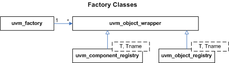

Factory Classes
As the name implies, the uvm_factory is used to manufacture (create) UVM objects and components. Only one instance of the factory is present in a given simulation.
User-defined object and component types are registered with the factory via typedef or macro invocation, as explained in uvm_default_factory::Usage. The factory generates and stores lightweight proxies to the user-defined objects and components: uvm_object_registry #(T,Tname) for objects and uvm_component_registry #(T,Tname) for components. Each proxy only knows how to create an instance of the object or component it represents, and so is very efficient in terms of memory usage.
When the user requests a new object or component from the factory (e.g. uvm_factory::create_object_by_type), the factory will determine what type of object to create based on its configuration, then ask that type’s proxy to create an instance of the type, which is returned to the user.

| Factory Classes | |
| As the name implies, the uvm_factory is used to manufacture (create) UVM objects and components. |